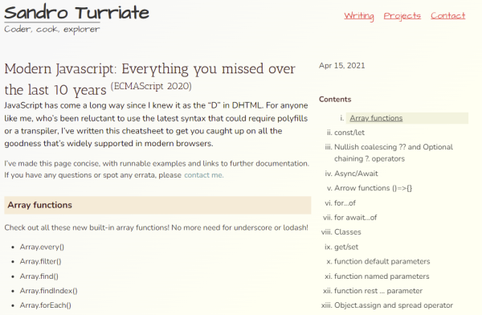
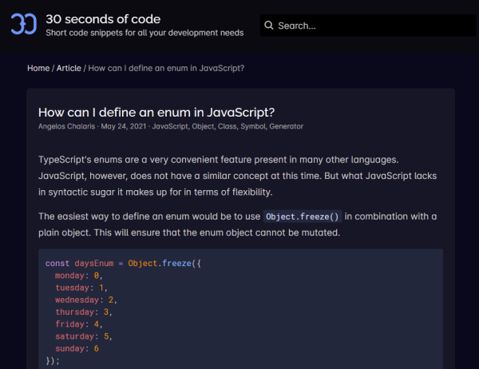
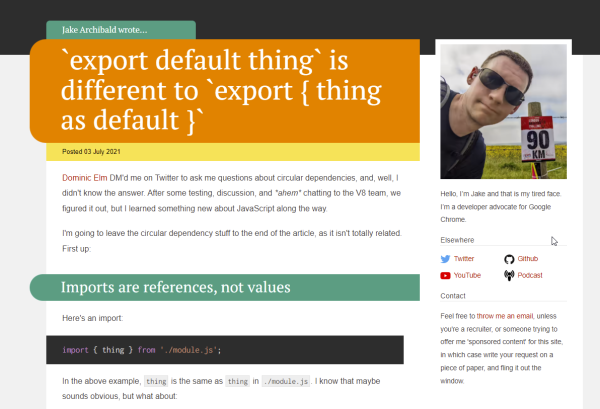
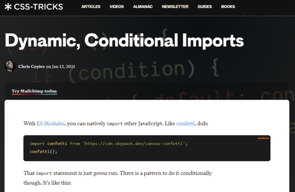
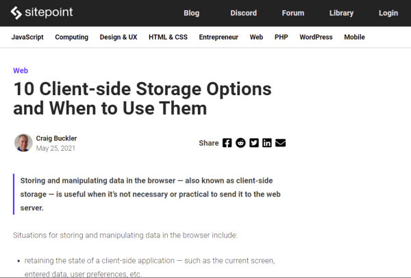
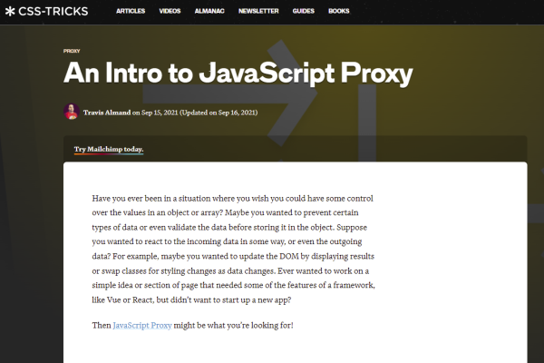
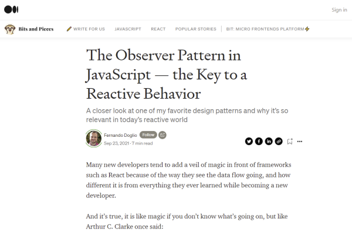
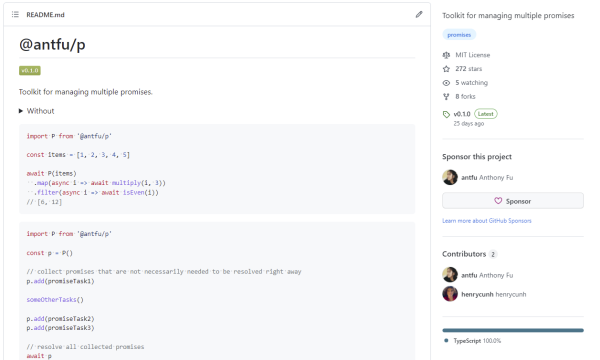
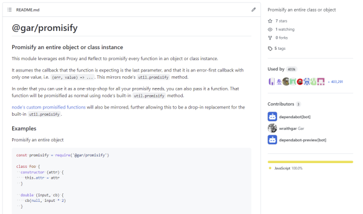

Discoveries #16 - JavaScript
In the first discoveries of 2022 I would like to offer you some interesting links to JavaScript articles that have general language features as their topic or extend them in a clever way. The language (respectively the ECMA standard behind it) is growing from year to year and it is exiting to see how it is expanding.
- Modern Javascript: Everything you missed over the last 10 years
- How can I define an enum in JavaScript?
- 'export default thing' is different to 'export { thing as default }'
- Dynamic, Conditional Imports
- 10 Client-side Storage Options and When to Use Them
- An Intro to JavaScript Proxy
- The Observer Pattern in JavaScript - The Key to a Reactive Behavior
- Why JavaScript Developers Should Prefer Axios Over Fetch
- Toolkit for managing multiple promises
- Promisify an entire object or class instance
Modern Javascript: Everything you missed over the last 10 years
by Sandro Turriatehttps://turriate.com/articles/modern-javascript-everything-you-missed-over-10-years
Sandra has written this post about the language features of ECMA Script 2020 a couple of months ago as a kind of CheatSheet, with runnable examples and a lot of useful background knowledge.
How can I define an enum in JavaScript?
by Angelos Chalarishttps://www.30secondsofcode.org/articles/s/javascript-enum
Angelos describes is this post, two different ways to define enums in JavaScript, as you might know them other languages.
'export default thing' is different to 'export { thing as default }'
by Jake Archibaldhttps://jakearchibald.com/2021/export-default-thing-vs-thing-as-default/
IMPORT and EXPORT are a fine way to separate code, but you need to know and keep in mind a few things, as Jake shows us here.
Dynamic, Conditional Imports
by Chris Coyierhttps://css-tricks.com/dynamic-conditional-imports/
When you separate code in different ES modules, you may come to the point where you want import a module depending on a specific condition. Chris show us here, how to deal with this easily.
10 Client-side Storage Options and When to Use Them
by Craig Bucklerhttps://www.sitepoint.com/client-side-storage-options-comparison/
Especially if you are writing a web app, you need to consider what storage options you have, to provide the user an optimal user experience. Craig list them all in his post and goes into the specific characteristics and possible uses.
An Intro to JavaScript Proxy
by Travis Almandhttps://css-tricks.com/an-intro-to-javascript-proxy/
JavaScript provides a PROXY, which enables you to intercept and redefine fundamental operations for an object. Is it not that common to use it, but it has great advantages, as Travis show us.
The Observer Pattern in JavaScript - The Key to a Reactive Behavior
by Fernando Dogliohttps://blog.bitsrc.io/the-observer-pattern-in-javascript-the-key-to-a-reactive-behavior-f28236e50e10
Sometimes it is necessary to decouple functionality in JS, in order to write cleaner code or to increase complexity. Fernando shows us how to implement our own observers, with subscribing, notifying and all that stuff.
Why JavaScript Developers Should Prefer Axios Over Fetch
by Sabesan Sathananthanhttps://betterprogramming.pub/why-javascript-developers-should-prefer-axios-over-fetch-294b28a96e2c
FETCH is the method defined in the ECMA standard to get data from remote servers, but in the meanwhile the library Axios has become almost a de-facto standard in the industry and Sabesan tells why.
Toolkit for managing multiple promises
by Anthony Fuhttps://github.com/antfu/p
This tiny library makes it easier to deal with multiple promises as it PROMISE.ALL does. Remarkable.
Promisify an entire object or class instance
by Garhttps://github.com/wraithgar/gar-promisify
Mixing async with non-async code may have some pitfalls, you can avoid by using Gar’s tiny library.
You can interact with this article (applause, criticism, whatever) by mention it in one of your posts, which will be shown here as a Webmention, or by leaving a good old comment with your GitHub account.
Webmentions
No Webmentions yet...
In case your blog software can't send Webmentions, you can use this form to submit me a mention of this article...


Comments